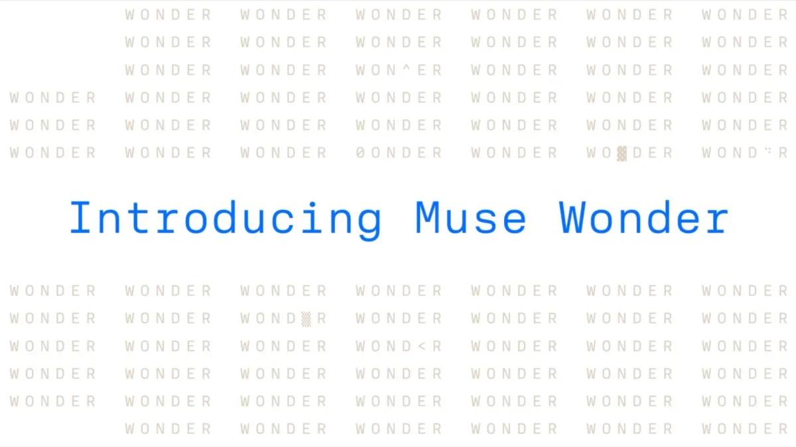

Meta · 閉源 · 文字／代理2026-10-12
Meta 發表 Muse Wonder 與 Muse Wonder Full：主打個人／專業代理，Full 僅 Muse Code 訂戶
Introducing Muse Wonder and Muse Wonder Full
Meta Superintelligence Labs 10/12 推出 Muse Wonder 系列：API／Muse Code 可用的 Muse Wonder，以及僅 Muse Code 訂戶可用、分數更高的 Muse Wonder Full。兩者皆標 1M 上下文，輸入含文字／圖／影片／音訊，輸出文字；強調 Active Memory（跨對話記住重點）與 Active Focus（長任務換路徑、遇阻再試、重要動作前確認）。Wonder API 定價每百萬 token 輸入 4／快取 0.20／輸出 20 美元（與 Claude Opus 5.5 同級）。官方自測表把兩款與 Fable 5.1、GPT-6 Astra、Opus 5.5 並列；獨立評測請看 Artificial Analysis 一文。